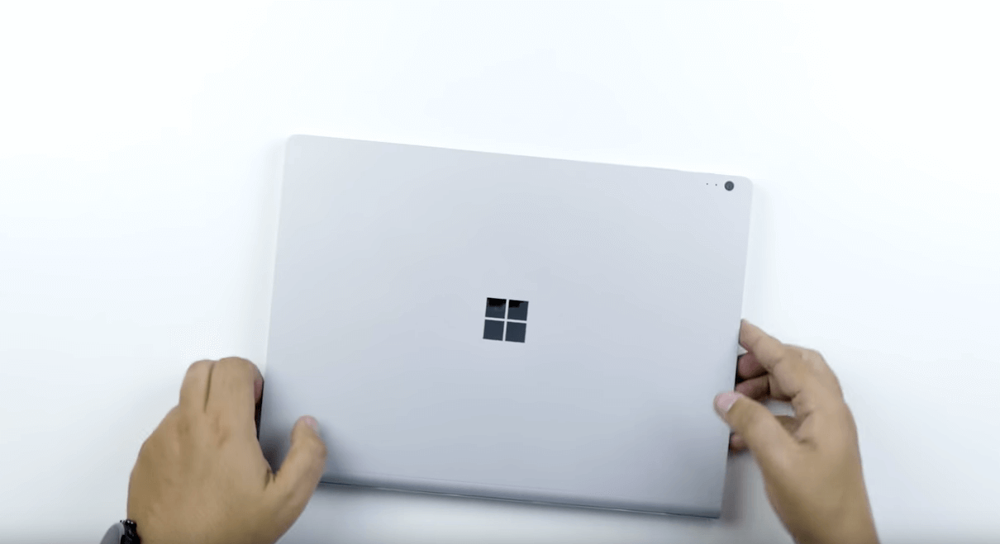
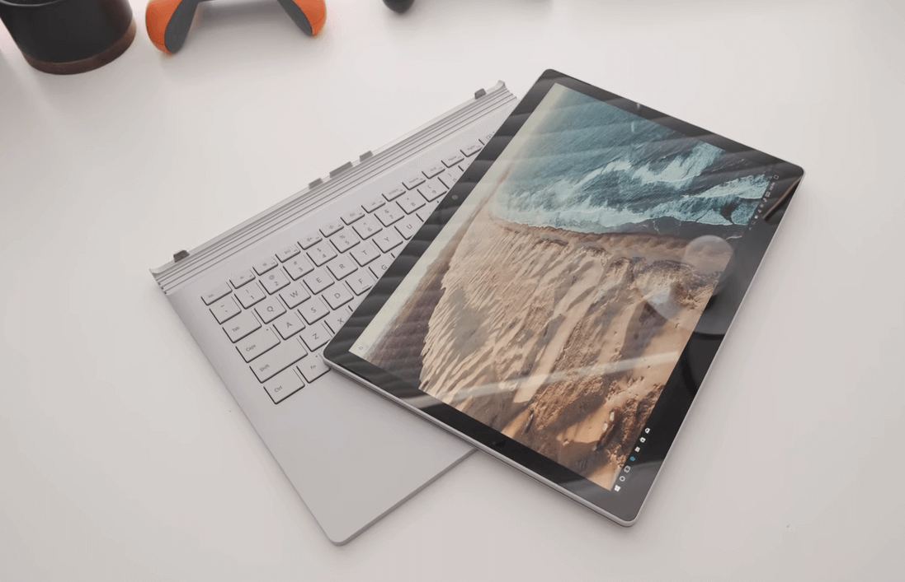

Laptop zum Programmieren 2020 [Notebook Empfehlung 2020]
10 beste Laptops für Programmierer und Entwickler 2019
Die ultimative Checklist der besten Laptops für Programmierer Coder und Entwickler 2020
Programmierer haben es nicht leicht auf dem heutigen Laptop Markt. Es gibt einfach zu viel Auswahl und man kann schnell überfordert sein mit den ganzen Vor und Nachteilen die uns diese Qual der Wahl bringt.
Hier ist die gute Nachricht:
Unser Team hat sich die 10 beliebtesten Laptops auf den Markt getestet und darauf speziell drauf geachtet, dass sie die besonderen Bedürfnisse für Programmierer erfüllen.
Viele Tests reden zu lange drum herum oder wurden von den Anbietern bezahlt für das bewerben ihrer Produkte.
Wir versprechen dir, dass du hier eine unabhängige Meinung erhältst und am Ende dir die Entscheidung abgenommen wurde, welcher denn nun der Richtige für dich ist.
Keine Sorge, der Text fasst alles kompakt zusammen und wir garantieren dir, dass du in nur 10 Minuten fertig bist mit der Suche und dich auf das Wesentliche konzentrieren kannst. coding und programmieren ! (Du kannst es auch für andere Sachen nach dem programmieren benutzen, das geht uns aber nichts an :) )
Also lasst uns keine Zeit verschwenden und direkt einsteigen mit dem ersten Test!
hier übrigens die Gewinner vorab 🌟:
Surface Microsoft

LincPlus

Aus Zenbook

- hier übrigens die Gewinner vorab 🌟:
- Macbook Pro
- Microsoft Surface Laptop 3
- Dell XPS 13
- Dell XPS 15
- ASUS Asus ZenBook Pro Duo UX581
- Budget Laptop für Programmierer
- Apple iPad Pro
Macbook AIR:
Display:
Fangen wir mit dem Display an. Auf keinen Fall solltest du die Qualität des Displays unterschätzen, da man gerade beim programmieren Stunden vor dem Bildschirm verbringt und man keine Lust auf brennende Augen hat.
Das Macbook Air hat ein unglaublich scharfes Retina Display mit ganzen 4 Millionen Pixeln und einer Auflösung von 2560 x 1600. Der Weißpunkt wird automatisch reguliert dank der True Tone Technologie und passt sich ebenfalls dem Umgebungslicht an. Den Code den du programmierst wird dadurch gestochen scharf und angenehm zu lesen sein.
Wichtig für Programmierer ist auch die Möglichkeit externe Displays zu verbinden. Dank dem Thunderbolt 3 Anschluss (Usb-C) ist dies kein Problem. 4K Monitore können kinderleicht verbunden werden und Übertragungsraten von bis zu 40 Gbit/s ermöglichen eine blitzschnelle und verzögerungsfreie Übertragung!

Tastatur:
Das Macbook Air hatte die letzten Jahre einen besonders schlechten Ruf durch die sogenannte Butterfly Technologie die in ihrer Tastatur verarbeitet war. Das hat sich aber mit dem aktuellen 2020 Modell geändert! Apple dachte sich: Alt bewährt - neu entdeckt und greift nun auf die vom Macbook Pro Modell bekannte Scherentechnologie zurück (in Apple Marketing Sprache MAGIC KEYBOARD ) , die mit ihrem 1mm Tastendruck ein angenehmes und vor allem leises tippen ermöglicht. Gesonderte Pfeiltasten erleichtern dir das navigieren und programmieren von Code und Tabellen in Handumdrehen.
Besonderen Luxus bietet die Hintergrundbeleuchtung der einzelnen Tasten und Apple hat sogar einen Umgebungslichtsensor spendiert, der das Tippen bei wenig Licht erleichtert.

Nicht zu vergessen ist das Force Touch Trackpad. Es gilt unter IT Experten zurecht als das beste Trackpad das zurzeit erhältlich ist und wer es einmal genutzt hat möchte es nicht mehr missen. Reagiert auf unterschiedlich starken Druck, höchst präzise, und mit besonders großer Interaktionsfläche für die MacOS typischen Multi-touch Gesten wie auf und zu ziehen oder Zoom.
Dieser hohe Komfort kann alleine schon der Grund sein, warum du dich für einen Mac zum programmieren entscheiden solltest.

Dieser hohe Komfort kann alleine schon der Grund sein, warum du dich für einen Mac zum programmieren entscheiden solltest.
Akku / Mobilität:
Sieht man sich an den Universitäten der Welt um, erkennt man dass die Mehrheit einen Macbook nutzen und nicht zuletzt wegen den außergewöhnlichen langen Betriebszeiten. 11 Stunden beträgt die Akkulaufzeit für kabelloses surfen mit dem neuen 2020 Modell.
Das Macbook besteht aus 100% recycletem Aluminium, das sich sehr edel und modern anfühlt. Das Design des Macbook ist und war schon immer eines der Alleinstellungsmerkmale der Apple Familie. Kombiniert mit einem federleichten Gewicht von nur 1,29 Kg.
Mobilität auf ganz hohem Niveau ohne nervigem Kabelsalat.
Gerade Digital-Nomads und welche die es werden wollen legen auf diese Eigenschaften Wert damit sie von überall aus bequem programmieren und designen können :)
Mobilität auf ganz hohem Niveau ohne nervigem Kabelsalat.
Specs:
- 13,3” Display (33,78 cm Diagonale)
- LED Hintergrund-Beleuchtung IPS Technologie,
- native Auflösung von 2560 x 1600 Pixeln bei 227 ppi
- Unterstützte skalierte Auflösungen:
- 1680 x 1050
- 1440 x 900
- 1024 x 640
- 16:10 Seitenverhältnis
- True Tone Technologie
Tastatur:
- Touch ID Sensor,
- Passwortgeschützte Daten inklusive Apple Pay Pfeiltasten
- Hintergrundbeleuchtung und Lichtsensor
Prozessor:
- Bis zu 4‑Core Intel Core i7 Prozessor
Festplatte
- Bis zu 2 TB SSD Festplatte
Arbeitsspeicher:
- 8 GB 3733 MHz LPDDR4X (optional 16 GB)
Pro: ### Con:
- Design *Preis
- Mobilität *Gaming tauglichkeit
- Komfort *Auf MacOS beschränkt (ohne Virtual Machine)
Macbook Pro
Wem das Macbook Air schon gefällt aber noch anspruchsvollere Arbeiten auf Workstation Niveau abliefern will, für den ist das Macbook Pro genau das Richtige.
True Tone Display mit 2560 x1600 in der gleichen Qualität wie bei dem Macbook Air. Die großen Unterschiede finden sich bei dem Innenleben: Das Macbook Pro ist nochmal um einiges leistungsstärker und besonders für Game Design von Nutzen da es mit seinem Quad-Core Intel Prozessoren mit Turbo Boost bis 4,7 GHz alles mitbringt was du dafür brauchst. Code programmieren, 3D Modelle rendern, Spezialeffekte hinzufügen und Video codieren auf Profi-Level ist somit kein Problem!
16GB Arbeitsspeicher erlauben dir mehrere Programme simultan zu nutzen ohne dass dein Workflow ins Stocken gerät!
Eines der größten Plus-Punkte des Macbook Pro ist die Touch Bar. Du kannst sie ganz nach deinen Bedürfnissen anpassen und so deine Produktivität auf ein noch nie da gewesenes Level transportieren. Du bist nicht nur auf voreingestellte Funktionen beschränkt. Du kannst die Bar so anpassen, wie sie dir gefällt und so noch schneller und bequemer arbeiten. So kannst du zum Beispiel eigene Kurzbefehle in deinen Programmier Tools erstellen und in die Touch Bar einsetzen. So sind deine wichtigsten Shortcuts immer in Reichweite und du kannst dich auf das Coden konzentrieren, anstatt sich immer wieder durch die gleichen Menüs kämpfen zu müssen.

Falls du ein Ipad besitzt kannst du deinen Schreibtisch vergrößern und dein iPad als 2. Display nutzen dank dem Sidecar feature. Ob du auf beiden parallel programmieren möchtest oder lieber das iPad für deine Spotify Playlist nutzt ist ganz dir überlassen. Ein nettes Feature ist es ohnehin, was man nicht missen möchte, wenn man es einmal erlebt hat.
Die Akkulaufzeit ist auch hier phänomenal mit 10 Stunden. Eine Stunde weniger als beim Macbook Air aber das ist der Preis den man für die unglaubliche Leistungssteigerung gerne in Kauf nimmt. Die 1,37Kg Gewicht fallen auch hier kaum ins Gewicht und ich kann für beide Macbook Modelle absolut eine hohe Mobilitätstauglichkeit garantieren!
SPEZIFIKATIONEN
- 6-Kern Intel Core i7 Prozessor der 8. Generation
- 15.4 “ Brillantes Retina-Display (2880 x 1800) mit True Tone Technologie
- 16 GB RAM
- Radeon Pro 560X Grafikkarte mit 4 GB Videospeicher
- 512 GB SSD
- Vier Thunderbolt 3 (USB-C) Anschlüsse
- Preis: ab 1499 €
Microsoft Surface Laptop 3
Es muss nicht immer Apple sein. Besonders bei den Laptops hat Microsoft ordentlich aufgeholt und ist bei weitem nicht mehr so langweilig wie es in der Vergangenheit üblich war.
Wir stellen euch das Surface Laptop 3 vor: Für viele zunächst ungewohnt ist das neue Touch Display des Surface Laptop. Es kommt in der 13,5 Zoll Größe daher mit einer Auflösung von 2256 x 1504 (201 PPI). Es ist das einzige Laptop in unserer Zusammenfassung, das ein 3:2 Seitenverhältnis besitzt.

Programmierer können (sich erstmal daran gewöhnt) vom Touch Display profitieren. Wir haben in unserem Test nach kurzer Zeit festgestellt wie natürlich sich das scrollen und zoomen in unseren Coding Sessions anfühlt, da es stark an das Gefühl erinnert, dass wir bereits von unseren Smartphones gewohnt sind. Einziges Manko, ist die starke Spiegelung des Displays. Das kann besonders beim programmieren im Freien ein Problem für euch darstellen.
Die Tastaturauflage kann auch mit einer einzigartigen Alcantara Auflage bestellt werden, was wir euch garantiert Nahe legen. Die Handballen haben so einen bequemen Platz bekommen und ihr werdet keine Druckpunkte oder Schmerzen in euren Handgelenken bekommen nach einer herausfordernden Programmier Session. Die Auflage bleibt stets angenehm kühl.

Das Design ist kurz und knapp sehr gelungen und hinkt den Macbooks nicht mehr weit hinterher. Ebenfalls die Mobilität wurde auf Apple Niveau gebracht mit einer Akkulaufzeit von 11,5 Stunden ! (das übertrifft sogar das Macbook Air um eine halbe Stunde. Immerhin.)
Das Mini-DisplayPort der Vorgänger ist Passe und weicht dem universellen USB-C Anschluss. Anschlüsse an externe 4k Displays ist damit kein Problem mehr.
Die Konfiguration beginnt bei der 10. Intel Generation i5 , 8 GB Ram und leider nur 128GB SSD Speicher. Da hätten wir uns mehr gewünscht, aber wer mehr Speicher benötigt, kann auf die größeren Modelle mit bis zu 1TB Speichergröße ein Auge werfen.
Zum programmieren reicht diese Leistung aus, aber für die Videobearbeitung und anspruchsvollere Dienste, raten wir euch auf ein Notebook mit dedizierter Grafikeinheit zurückzugreifen.

Specs:
- 13,5 Zoll
- Intel Core Ice Lake 10. Generation i5
- 8GB Ram
- 128 SSD Festplatte
Dell XPS 13
Dell ist bekannt für jahrelange Erfahrung im IT und Business Bereich. Die Marke verzichtet auf Schnick-Schnack und bietet eine Allround Paket für alle die einen Zeitgerechten Allrounder haben möchten.
Für Windows Liebhaber bietet sich hier die Möglichkeit ein edles Ultrabook für seine Alltags Arbeiten zu ergattern. Das Display ist sehr kontrastreich und besitzt eine Full HD Auflösung in 1920 x 1080. Außerdem ist das Display entspiegelt und bietet eine ordentliche Helligkeit, mit der du auch im Freien keine Probleme beim programmieren haben wirst!

Als größtes Manko ist wohl dem Ultrabook anzukreiden, dass es keine dedizierte Grafikkarte zu bieten hat. Falls du also nach dem programmieren noch eine Runde zocken willst, solltest du eher zu unserem Gaming Tipp zugreifen.
Vom größten Manko zum größten Pluspunkt: Der Akku hält satte 15 Stunden im reinen Coding Test und das bedeutet, dass du gute 2 Tage ohne Akku auskommst. Keine Sorge dass du aus deinem Programmier-Flow gerissen wirst!
Wenn du neben programmieren auch nicht auf gaming oder multimedia verzichten willst, dann ließ im nächsten Abschnitt weiter über den großen Bruder, den Dell XPS 15 !
Specs:
- Prozessor-Taktfrequenz: 1,8 GHz
- Prozessorfamilie: Intel Core i7 der achten Generation
- Anzahl Prozessorkerne: 4
- RAM-Speicher: 8 GB
- Interner Speichertyp: LPDDR3-SDRAM
- RAM-Speicher maximal: 16 GB
- Bildschirmdiagonale: 33,8 cm (13.3 Zoll)
- Bildschirmauflösung: 1920 x 1080 Pixel
- Touchscreen: Nein
Anschlüsse und Schnittstellen
- USB 3.2 Gen 1 (3.1 Gen 1) Anzahl der Steckplätze vom Typ C: 1 Preis: 1.478,90 €
Dell XPS 15
Programmieren abgehakt, warten aufs kompilieren im Hintergrund während du schon Chrome öffnest um auf Twitter deinen Feed zu checken oder direkt eine Runde zocken auf einem hochscharfen 4k Monitor? Dann bist du hier genau richtig!

Dell bietet in diesem Modell eines der wenigen 4K Displays mit OLED in diesem Test und wer schonmal im Genuss eines OLED Displays gekommen ist, weiß was auf ihn zukommt. OLED ist die einzige Display Technologie die ECHTES Schwarz bietet (die einzelnen Pixel schalten sich aus, keine Hintergrundbeleuchtung= real blackness).
Das kommt dir nicht nur bei deinen Netflix Runden zu Gunsten sondern besonders beim programmieren, wenn du lange Codes vor dir hast und deine Augen schonen willst. Oder noch besser, wenn du allgemein ein Freund des Darkmodes bist und mit weißem Text auf schwarzem Hintergrund arbeitest. Schonender geht es zur Zeit einfach nicht und das wird sich auch in deiner Produktivität wieder spiegeln!

Der Intel Core i7-9750H des XPS 15 ist laut Benchmark sogar schneller als das Gaming Notebook Razer Blade 15 Advanced!
Die verbaute Grafikkarte Geforce GTX 1650 reicht locker aus für genug FPS bei CS:GO , bei grafisch anspruchsvolleren Spielen wie Destiny 2, müssen wir leider die Grafik runterschrauben für ein flüßiges Spielerlebnis. Unserer Meinung aber macht es das gestochen scharfe Bild und schöne Schwarz wieder wett.
Der Preis ist zwar im 2000 € Breich aber es wird sich wohl kaum ein besseres 15,6 Zoll Laptop auf dem Markt finden lassen mit dieser Ausstattung.

Ganz perfekt ist auch dieser Laptop leider nicht. Das Gewicht mit fast 2 KG und die Akku Laufzeit von 8 Stunden sind die zwei größten Minus Punkte. Im simulierten Alltagstest mittels PCMark 8 Work messen wir “nur” 6 Stunden.
Wenn du aber auf ein 4k OLED Touchscreen nicht verzichten kannst, bist du hier genau richtig.
Specs:
- ProzessorIntel Core i7-8750H (Intel Core i7)
- Grafikkarte NVIDIA GeForce GTX 1050 Ti Max-Q - 4096 MB, Kerntakt: 1418 MHz, Speichertakt: 1752 MHz, GDDR5, 398.36, Optimus
- Hauptspeicher16384 MB
- DDR 4-2666, Dual-Channel, max. 32 GB
- Bildschirm 15.6 Zoll 16:9, 3840 x 2160 Pixel 282 PPI, kapazitiv, LQ156D1, IPS, spiegelnd: ja
- Mainboard Intel CM246
- MassenspeicherToshiba XG5 KXG50ZNV512G, 512 GB
- Gewicht 2.014 kg
Preis 2100 Euro
ASUS Asus ZenBook Pro Duo UX581
Kommen wir zu meinen heimlichen Favoriten der Programmierer Laptops! Dir gefiel die Touchbar und das schicke Aluminium Design der MacBooks? Die Leistung des Dell XPS hat dich ins grübeln gebracht? Du willst auf das Surface und dessen Windows 10 und Microsoft Anbindung nicht missen? Du willst einfach ein geiles 4K Laptop das einfach alles kann?
Such nicht weiter und besorg dir das Asus ZenBook Pro Duo UX581! Es besitzt nicht nur ein sondern gleich 2 4K Monitore die die Apple Touch Bar alt aussehen lassen mit dessen Funktionsvielfalt.
Das Screenpad ist nicht mehr nur als Erweiterung zu verstehen sondern praktisch als vollwertigen zweiten Monitor auf den du dank Quick Key komplexe Programmier Tastaturabläufe automatisieren kannst mit einem Tastendruck. Ganze Apps lassen sich auf die Symbolleiste ziehen und erhöhen deinen Workflow wie noch nie zuvor!
15,6 Zoll 4K UHD OLED. Mehr muss man wohl dazu nicht sagen, es ist einfach atemberaubend. Es ist schon zu schade und fast schon unfair es mit den anderen Laptops zu vergleichen. Daher sieh es nicht nur als Tool zum programmieren, sondern als kompletter Home Office Ersatz, der alle deine Bedürfnisse abdeckt, sei es programmieren / coding, gaming, Multimedia, Videobearbeitung oder Design.
Apropops Design. Es ist selten, dass Apple hier Konkurrenz bekommt, aber Asus ist es gelungen auch hier die Bestnote einzuheimsen. Der ikonische Spinmetal Finish verleiht dem ZenBook seine unverwechselbare Identität komplett aus Aluminium gefertigt mit glänzenden Kanten im Diamantschliff.
Da es immer noch ein Programmierer Blog ist, verlinken wir dir die Intel i7 Version mit 512 GB SSD Speicher und satten 16GB Ram am ende des Textes. Auf Wunsch kannst du sogar eine Intel i9 Variante der 9. Generation und 8 Kernen bestellen mit der neusten Geforce RTX 2060 Grafik. Dann brauchst du absolut keinen weiteren PC mehr, da hiermit wirklich sogar die anspruchsvollsten Programmierer vollkommen zufrieden sein sollten. Der Preis beginnt bei 2699 Euro, was wohl das Einzige ist, was wir als Manko ankreiden könnten. Da aber zur Zeit nichts vergleichbares auf dem Markt angeboten wird und die Qualität wie auch Leistung absolut Zukunftssicher ist, finden wir dass sich solch eine Investition durchaus lohnen kann. Deine Programmierer Fähigkeiten stehen hiermit aufjeden Fall nichts im Wege.
Specs:
- Bis zu Core™i9 Intel® Prozessor der 9. Generation mit 8 Kernen
- GeForce RTX2060 Grafik in Gaming-Qualität
- Bis zu 1TB PCIe® x4 SSD
- Bis zu 32GB DDR4 2666MHz
reis: ab 2.699,00 €
Budget Laptop für Programmierer
Wem das Zenbook viel zu viel ist für seine Bedürfnisse und einfach nach einem günstigen Ultrabook mit einem Top Preis-Leistungs Verhältnis sucht; für den habe ich das LincPlus P1 im Angebot.
Es besitzt alles was du zum einfachen programmieren brauchst. Unter anderem ein Full HD Display mit der üblichen 1920x1080 Auflösung. die Batterie reicht locker für 8 Stunden aus und unterstützt wird das Gerät von 4 GB Arbeitsspeicher.
Den günstigen Preis merkt man dem LincPlus absolut nicht an, denn es kommt mit einem sehr dünnen und leichtem Aluminium Body daher. Das Design kann absolut mit der höherpreisigen Konkurrenz mithalten.
Für den unschlagbaren Preis von nur 279 € können wir das Gerät Programmierern empfehlen, die eventuell dabei sind ihre ersten Coding Schritte zu machen, oder auch für Leute die ein günstiges Zweitgerät benötigen. Es sollte euch aber bewusst sein dass die Prozessorleistung ( Intel Celeron Gemini N4000-Prozessor ) nicht für Anspruchsvolle Arbeiten ausgelegt ist.
Beim Speicher hätten wir uns auch mehr gewünscht als die mitgelieferten 64GB eMMC. Aufrüstbar auf 512 GB SSD ist es aber falls ihr es wünscht.
Specs: Bildschirmgröße 13.30 Zoll Bildschirmauflösung 1920x1080 Max. Bildschirmauflösung 1080p Full HD Artikelgewicht 1,4 Kg Batterie mit 12000mAh (ca. 8 Stunden Laufzeit)
Link: Preis: 279 €
Apple iPad Pro
Zum Schluss möchten wir doch eine Tablet Alternative nutzen, falls du bereits ein Home-Office PC zum programmieren benutzt und jetzt dich umschaust mit dem Fokus auf die Mobilität.
Apple hat 2020 das neue iPad Pro vorgestellt und ist hier auf alle offenen Wünsche der vergangenen Jahre eingegangen.
Sei es das neue speziell für iPads konstruierte iPadOS, die neue externe Tastatur (inklusive Trackpad!), oder der USB-C Anschluss mit dem du auch externe Monitore verbinden kannst.
Das Display besitzt die Liquid Retina Technologie. Features wie ProMotion und True Tone bringen dir die gewohnte Farbgenauigkeit Apples in ein handliches Format und es erreicht 120Hz, was besonders beim scrollen von langen Programm Codes augenschmeichelnd ist.
Ein Riesenvorteil zu den Laptop Konterparts die du hier vorfindest, ist die nahtlose Einbindung in dein Apple Ecosystem und die verfügbaren Kameras mit 10 Megapixel Ultraweitwinkel und 12 Megapixel Weitwinkel. Durch die Truedepth Frontkamera kannst du auf die sicherste Gesichtsauthentifizierung (Face ID) zurückgreifen, die der Markt aktuell hergibt.
Vielleicht fragst du dich, ob denn ein iPad genug Power mitbringt fürs programmieren. Auch hier hat Apple ordentlich was draufgesetzt und ist dank A12Z Bionic Chip mit 8 Kernen schneller als die meisten aktuellen Laptops! 4KVideobearbeitung , 3D Design und Spielentwicklung sind hiermit möglich. Die Neural Engine von Apple ermöglicht dem iPad sogar machinelles Lernen, damit du auf der zukunftssicheren Seite bist.
Wir empfehlen dir unbedingt das 12,9 Zoll Model, damit du auch genug Fläche hast deinen Programmier Code zu bearbeiten. Das wird ansonsten auf dem 11 “ Modell recht knapp.
Übrigens ist das neue Magic Keyboard ein Must Have für alle die programmieren möchten auf dem iPad. Es wurde neu entwickelt im 2020 Modell und besitzt eine vollwertige Tastaur mit angenehmen Druckpunkt und jetzt sogar mit eigenem Trackpad. Damit hast du die komplette Funktionalität eines Laptops, kombiniert mit der Mobilität eines iPads.Auf Wunsch kannst du natürlich auch eine Maus anschließen oder den Apple Pencil verwenden. Deiner Kreativität sind keine Grenzen gesetzt beim Coding mit dem Ipad Pro. Das niedrige Gewicht von unter 500 Gramm und die Batterielaufzeit von 10 Stunden tun ihr übriges.
Durch 4g LTE und WLAN Konnektiviät bist du absolut unabhängig und kannst coden wo immer und wann immer du magst.
Specs
- 12,9” und 11”
- Liquid Retina Display
- ProMotion
- A12Z Bionic Chip
- Pro Kameras und LiDAR Scanner
- Face ID
- Bis zu 1 TB Speicherplatz
- Unterstützung für Apple Pencil *Unterstützung für Magic Keyboard und Smart Keyboard Folio
Preis: ab 11” ab 879 €
Preis: ab 12,9” ab 1099 €